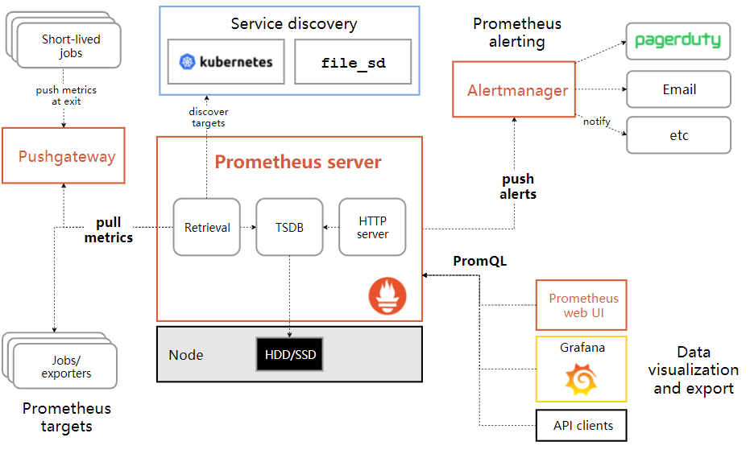

<!DOCTYPE HTML>
<html lang="zh-hans" >
    <head>
        <meta charset="UTF-8">
        <meta content="text/html; charset=utf-8" http-equiv="Content-Type">
        <title>【prometheus】prometheus入门知识概念 · 运维操作指南</title>
        <meta http-equiv="X-UA-Compatible" content="IE=edge" />
        <meta name="description" content="">
        <meta name="generator" content="GitBook 3.2.3">
        <meta name="author" content="vishon">
        
        
    
    <link rel="stylesheet" href="../gitbook/style.css">

    
            
                
                <link rel="stylesheet" href="../gitbook/gitbook-plugin-search-plus/search.css">
                
            
                
                <link rel="stylesheet" href="../gitbook/gitbook-plugin-tbfed-pagefooter/footer.css">
                
            
                
                <link rel="stylesheet" href="../gitbook/gitbook-plugin-splitter/splitter.css">
                
            
                
                <link rel="stylesheet" href="../gitbook/gitbook-plugin-page-toc-button/plugin.css">
                
            
                
                <link rel="stylesheet" href="../gitbook/gitbook-plugin-back-to-top-button/plugin.css">
                
            
                
                <link rel="stylesheet" href="../gitbook/gitbook-plugin-pageview-count/plugin.css">
                
            
                
                <link rel="stylesheet" href="../gitbook/gitbook-plugin-auto-scroll-table/website.css">
                
            
                
                <link rel="stylesheet" href="../gitbook/gitbook-plugin-code/plugin.css">
                
            
                
                <link rel="stylesheet" href="https://unpkg.com/gitalk/dist/gitalk.css">
                
            
                
                <link rel="stylesheet" href="../gitbook/gitbook-plugin-highlight/website.css">
                
            
                
                <link rel="stylesheet" href="../gitbook/gitbook-plugin-fontsettings/website.css">
                
            
        

    

    
        
    
        
    
        
    
        
    
        
    
        
    

        
    
    
    
    
    <meta name="HandheldFriendly" content="true"/>
    <meta name="viewport" content="width=device-width, initial-scale=1, user-scalable=no">
    <meta name="apple-mobile-web-app-capable" content="yes">
    <meta name="apple-mobile-web-app-status-bar-style" content="black">
    <link rel="apple-touch-icon-precomposed" sizes="152x152" href="../gitbook/images/apple-touch-icon-precomposed-152.png">
    <link rel="shortcut icon" href="../gitbook/images/favicon.ico" type="image/x-icon">

    
    <link rel="next" href="Prometheus-collects-Docker-Engine-Metrics.html" />
    
    

    
        <link rel="shortcut icon" href='../favicon.ico' type="image/x-icon">
    
    
        <link rel="bookmark" href='../favicon.ico' type="image/x-icon">
    
    
    

    <style>
    @media only screen and (max-width: 640px) {
        .book-header .hidden-mobile {
            display: none;
        }
    }
    </style>
    <script>
        window["gitbook-plugin-github-buttons"] = {"repo":"nieweixing/mybook","types":["star"],"size":"small"};
    </script>

    </head>
    <body>
        
<div class="book">
    <div class="book-summary">
        
            
<div id="book-search-input" role="search">
    <input type="text" placeholder="输入并搜索" />
</div>

            
                <nav role="navigation">
                


<ul class="summary">
    
    
    
        
        <li>
            <a href="https://www.niewx.cn" target="_blank" class="custom-link">聂伟星个人博客</a>
        </li>
    
        
        <li>
            <a href="https://cloud.tencent.com/developer/column/87421" target="_blank" class="custom-link">TKE使用操作文档</a>
        </li>
    
    

    
    <li class="divider"></li>
    

    
        
        
    
        <li class="chapter " data-level="1.1" data-path="../">
            
                <a href="../">
            
                    
                    简介
            
                </a>
            

            
        </li>
    

    
        
        <li class="header">如何搭建属于自己的gitbook</li>
        
        
    
        <li class="chapter " data-level="2.1" data-path="../gitbook/install-gitbook.html">
            
                <a href="../gitbook/install-gitbook.html">
            
                    
                    【gitbook】本地机器安装gitbook
            
                </a>
            

            
        </li>
    
        <li class="chapter " data-level="2.2" data-path="../gitbook/gitbook-add-note.html">
            
                <a href="../gitbook/gitbook-add-note.html">
            
                    
                    【gitbook】gitbook添加笔记
            
                </a>
            

            
        </li>
    
        <li class="chapter " data-level="2.3" data-path="../gitbook/gitbook-upload-github.html">
            
                <a href="../gitbook/gitbook-upload-github.html">
            
                    
                    【gitbook】gitbook上传到github托管
            
                </a>
            

            
        </li>
    
        <li class="chapter " data-level="2.4" data-path="../gitbook/gitbook-plugin-usage.html">
            
                <a href="../gitbook/gitbook-plugin-usage.html">
            
                    
                    【gitbook】gitbook插件使用
            
                </a>
            

            
        </li>
    

    
        
        <li class="header">linux运维笔记</li>
        
        
    
        <li class="chapter " data-level="3.1" data-path="../linux/shell-script-template.html">
            
                <a href="../linux/shell-script-template.html">
            
                    
                    【linux】shell脚本模板
            
                </a>
            

            
        </li>
    
        <li class="chapter " data-level="3.2" data-path="../linux/cvm-build-openvpn.html">
            
                <a href="../linux/cvm-build-openvpn.html">
            
                    
                    【linux】腾讯云cvm上搭建openvpn
            
                </a>
            

            
        </li>
    
        <li class="chapter " data-level="3.3" data-path="../linux/vmware-install-centos-set-static-ip-address.html">
            
                <a href="../linux/vmware-install-centos-set-static-ip-address.html">
            
                    
                    【linux】vmware安装centos环境设置静态的ip地址
            
                </a>
            

            
        </li>
    
        <li class="chapter " data-level="3.4" data-path="../linux/Use-awk-to-extract-field-information.html">
            
                <a href="../linux/Use-awk-to-extract-field-information.html">
            
                    
                    【linux】使用awk处理字段信息
            
                </a>
            

            
        </li>
    

    
        
        <li class="header">数据库运维笔记</li>
        
        
    
        <li class="chapter " data-level="4.1" data-path="../database/mysql-devops-note.html">
            
                <a href="../database/mysql-devops-note.html">
            
                    
                    【datebase】mysql运维笔记
            
                </a>
            

            
        </li>
    
        <li class="chapter " data-level="4.2" data-path="../database/mongodb-devops-note.html">
            
                <a href="../database/mongodb-devops-note.html">
            
                    
                    【datebase】mongodb运维笔记
            
                </a>
            

            
        </li>
    
        <li class="chapter " data-level="4.3" data-path="../database/redis-devops-note.html">
            
                <a href="../database/redis-devops-note.html">
            
                    
                    【datebase】redis运维笔记
            
                </a>
            

            
        </li>
    
        <li class="chapter " data-level="4.4" data-path="../database/elasticsearch-devops-note.html">
            
                <a href="../database/elasticsearch-devops-note.html">
            
                    
                    【datebase】elasticsearch运维笔记
            
                </a>
            

            
        </li>
    

    
        
        <li class="header">docker运维笔记</li>
        
        
    
        <li class="chapter " data-level="5.1" data-path="../docker/dockerfile-study.html">
            
                <a href="../docker/dockerfile-study.html">
            
                    
                    【docker】dockerfile学习笔记
            
                </a>
            

            
        </li>
    
        <li class="chapter " data-level="5.2" data-path="../docker/docker-compose-study.html">
            
                <a href="../docker/docker-compose-study.html">
            
                    
                    【docker】docker-compose学习笔记
            
                </a>
            

            
        </li>
    

    
        
        <li class="header">kubernetes运维笔记</li>
        
        
    
        <li class="chapter " data-level="6.1" data-path="../k8s/k8s-common-commands.html">
            
                <a href="../k8s/k8s-common-commands.html">
            
                    
                    【k8s】k8s常用命令总结
            
                </a>
            

            
        </li>
    
        <li class="chapter " data-level="6.2" data-path="../k8s/k8s-force-delete-terminating-ns.html">
            
                <a href="../k8s/k8s-force-delete-terminating-ns.html">
            
                    
                    【k8s】强制删除Terminating状态ns
            
                </a>
            

            
        </li>
    
        <li class="chapter " data-level="6.3" data-path="../k8s/userd-filebeat-as-sidecar-collect-log.html">
            
                <a href="../k8s/userd-filebeat-as-sidecar-collect-log.html">
            
                    
                    【k8s】k8s中filebeat作为sidecar采集容器日志
            
                </a>
            

            
        </li>
    
        <li class="chapter " data-level="6.4" data-path="../k8s/k8s-generate-kubeonfig.html">
            
                <a href="../k8s/k8s-generate-kubeonfig.html">
            
                    
                    【k8s】k8s中生成自定义用户kubeconfig
            
                </a>
            

            
        </li>
    
        <li class="chapter " data-level="6.5" data-path="../k8s/kubecm-manages-k8s-clusters.html">
            
                <a href="../k8s/kubecm-manages-k8s-clusters.html">
            
                    
                    【k8s】kubecm管理多k8s集群
            
                </a>
            

            
        </li>
    
        <li class="chapter " data-level="6.6" data-path="../k8s/getting-started-with-kustomize-actually.html">
            
                <a href="../k8s/getting-started-with-kustomize-actually.html">
            
                    
                    【k8s】kustomize入门实践
            
                </a>
            

            
        </li>
    
        <li class="chapter " data-level="6.7" data-path="../k8s/k8s-deploys-hostport-mode-pod-error-report.html">
            
                <a href="../k8s/k8s-deploys-hostport-mode-pod-error-report.html">
            
                    
                    【k8s】k8s部署hostport模式pod报错端口冲突
            
                </a>
            

            
        </li>
    
        <li class="chapter " data-level="6.8" data-path="../k8s/pod-mounting-nfs-data-volume-error-report-insufficient-permissions.html">
            
                <a href="../k8s/pod-mounting-nfs-data-volume-error-report-insufficient-permissions.html">
            
                    
                    【k8s】pod挂载nfs数据卷报错权限不足
            
                </a>
            

            
        </li>
    
        <li class="chapter " data-level="6.9" data-path="../k8s/The-prestop-configuration-in-k8s-does-not-take-effect.html">
            
                <a href="../k8s/The-prestop-configuration-in-k8s-does-not-take-effect.html">
            
                    
                    【k8s】k8s中配置prestop不生效
            
                </a>
            

            
        </li>
    
        <li class="chapter " data-level="6.10" data-path="../k8s/Use-scripts-to-perform-health-detection-on-pods.html">
            
                <a href="../k8s/Use-scripts-to-perform-health-detection-on-pods.html">
            
                    
                    【k8s】用脚本对pod进行健康探测
            
                </a>
            

            
        </li>
    
        <li class="chapter " data-level="6.11" data-path="../k8s/Batch-delete-ns-in-terminating-state-in-the-cluster.html">
            
                <a href="../k8s/Batch-delete-ns-in-terminating-state-in-the-cluster.html">
            
                    
                    【k8s】批量删除集群内terminating状态的ns
            
                </a>
            

            
        </li>
    
        <li class="chapter " data-level="6.12" data-path="../k8s/Modify-the-resources-configuration-of-the-container-under-the-namespace.html">
            
                <a href="../k8s/Modify-the-resources-configuration-of-the-container-under-the-namespace.html">
            
                    
                    【k8s】批量修改命名空间下容器的resources配置
            
                </a>
            

            
        </li>
    

    
        
        <li class="header">TKE运维笔记</li>
        
        
    
        <li class="chapter " data-level="7.1" data-path="../tke/tke-used-docker-in-docker.html">
            
                <a href="../tke/tke-used-docker-in-docker.html">
            
                    
                    【tke】tke上使用docker-in-docker
            
                </a>
            

            
        </li>
    
        <li class="chapter " data-level="7.2" data-path="../tke/tke-deploy-jumpserver.html">
            
                <a href="../tke/tke-deploy-jumpserver.html">
            
                    
                    【tke】tke上部署Jumpserver跳板机
            
                </a>
            

            
        </li>
    
        <li class="chapter " data-level="7.3" data-path="../tke/get-the-cbsId-of-pvc-in-the-tke-cluster.html">
            
                <a href="../tke/get-the-cbsId-of-pvc-in-the-tke-cluster.html">
            
                    
                    【tke】获取pvc对应的cbs-id
            
                </a>
            

            
        </li>
    
        <li class="chapter " data-level="7.4" data-path="../tke/clean-the-evicted-state-pod-in-the-cluster.html">
            
                <a href="../tke/clean-the-evicted-state-pod-in-the-cluster.html">
            
                    
                    【tke】清除集群中所有的evited状态pod
            
                </a>
            

            
        </li>
    
        <li class="chapter " data-level="7.5" data-path="../tke/adjust-workload-replicas-under-the-namespace.html">
            
                <a href="../tke/adjust-workload-replicas-under-the-namespace.html">
            
                    
                    【tke】调整命名空间所有deploy和sts的副本数
            
                </a>
            

            
        </li>
    
        <li class="chapter " data-level="7.6" data-path="../tke/modify-the-permissions-of-the-container-mount-directory.html">
            
                <a href="../tke/modify-the-permissions-of-the-container-mount-directory.html">
            
                    
                    【tke】如何在非root用户启动的镜像中设置挂载目录权限
            
                </a>
            

            
        </li>
    
        <li class="chapter " data-level="7.7" data-path="../tke/The-domain-name-resolved-in-the-alpine-container-exceeds-5s.html">
            
                <a href="../tke/The-domain-name-resolved-in-the-alpine-container-exceeds-5s.html">
            
                    
                    【tke】alpine镜像内解析域名超5s
            
                </a>
            

            
        </li>
    
        <li class="chapter " data-level="7.8" data-path="../tke/TKE-redeploys-cert-manager-and-keeps-getting-stuck.html">
            
                <a href="../tke/TKE-redeploys-cert-manager-and-keeps-getting-stuck.html">
            
                    
                    【tke】TKE重新部署cert-manager一直卡主
            
                </a>
            

            
        </li>
    

    
        
        <li class="header">云计算运维笔记</li>
        
        
    
        <li class="chapter " data-level="8.1" data-path="../cloud/1.md">
            
                <span>
            
                    
                    云计算简介
            
                </a>
            

            
        </li>
    
        <li class="chapter " data-level="8.2" >
            
                <span>
            
                    
                    aws
            
                </span>
            

            
            <ul class="articles">
                
    
        <li class="chapter " data-level="8.2.1" data-path="../cloud/aws/awscli-command-operation.html">
            
                <a href="../cloud/aws/awscli-command-operation.html">
            
                    
                    【aws】awscli命令行操作
            
                </a>
            

            
        </li>
    

            </ul>
            
        </li>
    
        <li class="chapter " data-level="8.3" >
            
                <span>
            
                    
                    腾讯云
            
                </span>
            

            
        </li>
    

    
        
        <li class="header">prometheus运维笔记</li>
        
        
    
        <li class="chapter active" data-level="9.1" data-path="basic-knowledge-of-prometheus.html">
            
                <a href="basic-knowledge-of-prometheus.html">
            
                    
                    【prometheus】prometheus入门知识概念
            
                </a>
            

            
        </li>
    
        <li class="chapter " data-level="9.2" data-path="Prometheus-collects-Docker-Engine-Metrics.html">
            
                <a href="Prometheus-collects-Docker-Engine-Metrics.html">
            
                    
                    【prometheus】Prometheus采集Docker Engine Metrics
            
                </a>
            

            
        </li>
    

    
        
        <li class="header">istio运维笔记</li>
        
        
    
        <li class="chapter " data-level="10.1" data-path="../istio/Sidecar-startup-sequence-problem-in-istio.html">
            
                <a href="../istio/Sidecar-startup-sequence-problem-in-istio.html">
            
                    
                    【istio】istio中sidecar启动顺序问题
            
                </a>
            

            
        </li>
    
        <li class="chapter " data-level="10.2" data-path="../istio/istio-traffic-shift.html">
            
                <a href="../istio/istio-traffic-shift.html">
            
                    
                    【istio】istio流量转移实践
            
                </a>
            

            
        </li>
    
        <li class="chapter " data-level="10.3" data-path="../istio/istio-multi-cluster-nearby-access.html">
            
                <a href="../istio/istio-multi-cluster-nearby-access.html">
            
                    
                    【istio】istio多集群就近接入
            
                </a>
            

            
        </li>
    

    

    <li class="divider"></li>

    <li>
        <a href="https://www.gitbook.com" target="blank" class="gitbook-link">
            本书使用 GitBook 发布
        </a>
    </li>
</ul>


                </nav>
            
        
    </div>

    <div class="book-body">
        
            <div class="body-inner">
                
                    

<div class="book-header" role="navigation">
    

    <!-- Title -->
    <h1>
        <i class="fa fa-circle-o-notch fa-spin"></i>
        <a href=".." >【prometheus】prometheus入门知识概念</a>
    </h1>
</div>


                    <div class="page-wrapper" tabindex="-1" role="main">
                        <div class="page-inner">
                            
<div class="search-plus" id="book-search-results">
    <div class="search-noresults">
    
                                <section class="normal markdown-section">
                                
                                <h1 id="prometheus&#x7B80;&#x4ECB;">prometheus&#x7B80;&#x4ECB;</h1>
<p>Prometheus&#x662F;&#x4E00;&#x4E2A;&#x5F00;&#x6E90;&#x76D1;&#x63A7;&#x7CFB;&#x7EDF;&#xFF0C;&#x5B83;&#x524D;&#x8EAB;&#x662F;SoundCloud&#x7684;&#x8B66;&#x544A;&#x5DE5;&#x5177;&#x5305;&#x3002;&#x4ECE;2012&#x5E74;&#x5F00;&#x59CB;&#xFF0C;&#x8BB8;&#x591A;&#x516C;&#x53F8;&#x548C;&#x7EC4;&#x7EC7;&#x5F00;&#x59CB;&#x4F7F;&#x7528;Prometheus&#x3002;&#x8BE5;&#x9879;&#x76EE;&#x7684;&#x5F00;&#x53D1;&#x4EBA;&#x5458;&#x548C;&#x7528;&#x6237;&#x793E;&#x533A;&#x975E;&#x5E38;&#x6D3B;&#x8DC3;&#xFF0C;&#x8D8A;&#x6765;&#x8D8A;&#x591A;&#x7684;&#x5F00;&#x53D1;&#x4EBA;&#x5458;&#x548C;&#x7528;&#x6237;&#x53C2;&#x4E0E;&#x5230;&#x8BE5;&#x9879;&#x76EE;&#x4E2D;&#x3002;&#x76EE;&#x524D;&#x5B83;&#x662F;&#x4E00;&#x4E2A;&#x72EC;&#x7ACB;&#x7684;&#x5F00;&#x6E90;&#x9879;&#x76EE;&#xFF0C;&#x4E14;&#x4E0D;&#x4F9D;&#x8D56;&#x4E0E;&#x4EFB;&#x4F55;&#x516C;&#x53F8;&#x3002; &#x4E3A;&#x4E86;&#x5F3A;&#x8C03;&#x8FD9;&#x70B9;&#x548C;&#x660E;&#x786E;&#x8BE5;&#x9879;&#x76EE;&#x6CBB;&#x7406;&#x7ED3;&#x6784;&#xFF0C;Prometheus&#x5728;2016&#x5E74;&#x7EE7;Kurberntes&#x4E4B;&#x540E;&#xFF0C;&#x52A0;&#x5165;&#x4E86;Cloud Native Computing Foundation&#x3002;</p>
<p><strong>&#x7279;&#x5F81;</strong></p>
<p>Prometheus&#x7684;&#x4E3B;&#x8981;&#x7279;&#x5F81;&#x6709;&#xFF1A;</p>
<ul>
<li>&#x591A;&#x7EF4;&#x5EA6;&#x6570;&#x636E;&#x6A21;&#x578B;</li>
<li>&#x7075;&#x6D3B;&#x7684;&#x67E5;&#x8BE2;&#x8BED;&#x8A00;</li>
<li>&#x4E0D;&#x4F9D;&#x8D56;&#x5206;&#x5E03;&#x5F0F;&#x5B58;&#x50A8;&#xFF0C;&#x5355;&#x4E2A;&#x670D;&#x52A1;&#x5668;&#x8282;&#x70B9;&#x662F;&#x81EA;&#x4E3B;&#x7684;</li>
<li>&#x4EE5;HTTP&#x65B9;&#x5F0F;&#xFF0C;&#x901A;&#x8FC7;pull&#x6A21;&#x578B;&#x62C9;&#x53BB;&#x65F6;&#x95F4;&#x5E8F;&#x5217;&#x6570;&#x636E;</li>
<li>&#x4E5F;&#x901A;&#x8FC7;&#x4E2D;&#x95F4;&#x7F51;&#x5173;&#x652F;&#x6301;push&#x6A21;&#x578B;</li>
<li>&#x901A;&#x8FC7;&#x670D;&#x52A1;&#x53D1;&#x73B0;&#x6216;&#x8005;&#x9759;&#x6001;&#x914D;&#x7F6E;&#xFF0C;&#x6765;&#x53D1;&#x73B0;&#x76EE;&#x6807;&#x670D;&#x52A1;&#x5BF9;&#x8C61;</li>
<li>&#x652F;&#x6301;&#x591A;&#x79CD;&#x591A;&#x6837;&#x7684;&#x56FE;&#x8868;&#x548C;&#x754C;&#x9762;&#x5C55;&#x793A;&#xFF0C;grafana&#x4E5F;&#x652F;&#x6301;&#x5B83;</li>
</ul>
<p><strong>&#x7EC4;&#x4EF6;</strong></p>
<p>Prometheus&#x751F;&#x6001;&#x5305;&#x62EC;&#x4E86;&#x5F88;&#x591A;&#x7EC4;&#x4EF6;&#xFF0C;&#x5B83;&#x4EEC;&#x4E2D;&#x7684;&#x4E00;&#x4E9B;&#x662F;&#x53EF;&#x9009;&#x7684;&#xFF1A;</p>
<ul>
<li>&#x4E3B;&#x670D;&#x52A1;Prometheus Server&#x8D1F;&#x8D23;&#x6293;&#x53D6;&#x548C;&#x5B58;&#x50A8;&#x65F6;&#x95F4;&#x5E8F;&#x5217;&#x6570;&#x636E;</li>
<li>&#x5BA2;&#x6237;&#x5E93;&#x8D1F;&#x8D23;&#x68C0;&#x6D4B;&#x5E94;&#x7528;&#x7A0B;&#x5E8F;&#x4EE3;&#x7801;</li>
<li>&#x652F;&#x6301;&#x77ED;&#x751F;&#x547D;&#x5468;&#x671F;&#x7684;PUSH&#x7F51;&#x5173;</li>
<li>&#x57FA;&#x4E8E;Rails/SQL&#x4EEA;&#x8868;&#x76D8;&#x6784;&#x5EFA;&#x5668;&#x7684;GUI</li>
<li>&#x591A;&#x79CD;&#x5BFC;&#x51FA;&#x5DE5;&#x5177;&#xFF0C;&#x53EF;&#x4EE5;&#x652F;&#x6301;Prometheus&#x5B58;&#x50A8;&#x6570;&#x636E;&#x8F6C;&#x5316;&#x4E3A;HAProxy&#x3001;StatsD&#x3001;Graphite&#x7B49;&#x5DE5;&#x5177;&#x6240;&#x9700;&#x8981;&#x7684;&#x6570;&#x636E;&#x5B58;&#x50A8;&#x683C;&#x5F0F;</li>
<li>&#x8B66;&#x544A;&#x7BA1;&#x7406;&#x5668;</li>
<li>&#x547D;&#x4EE4;&#x884C;&#x67E5;&#x8BE2;&#x5DE5;&#x5177;</li>
<li>&#x5176;&#x4ED6;&#x5404;&#x79CD;&#x652F;&#x6491;&#x5DE5;&#x5177;</li>
<li>&#x591A;&#x6570;Prometheus&#x7EC4;&#x4EF6;&#x662F;Go&#x8BED;&#x8A00;&#x5199;&#x7684;&#xFF0C;&#x8FD9;&#x4F7F;&#x5F97;&#x8FD9;&#x4E9B;&#x7EC4;&#x4EF6;&#x5F88;&#x5BB9;&#x6613;&#x7F16;&#x8BD1;&#x548C;&#x90E8;&#x7F72;&#x3002;</li>
</ul>
<p><strong>&#x67B6;&#x6784;</strong></p>
<p>&#x4E0B;&#x9762;&#x8FD9;&#x5F20;&#x56FE;&#x8BF4;&#x660E;&#x4E86;Prometheus&#x7684;&#x6574;&#x4F53;&#x67B6;&#x6784;&#xFF0C;&#x4EE5;&#x53CA;&#x751F;&#x6001;&#x4E2D;&#x7684;&#x4E00;&#x4E9B;&#x7EC4;&#x4EF6;&#x4F5C;&#x7528;:</p>
<p> </p>
<p>Prometheus&#x670D;&#x52A1;&#xFF0C;&#x53EF;&#x4EE5;&#x76F4;&#x63A5;&#x901A;&#x8FC7;&#x76EE;&#x6807;&#x62C9;&#x53D6;&#x6570;&#x636E;&#xFF0C;&#x6216;&#x8005;&#x95F4;&#x63A5;&#x5730;&#x901A;&#x8FC7;&#x4E2D;&#x95F4;&#x7F51;&#x5173;&#x62C9;&#x53D6;&#x6570;&#x636E;&#x3002;&#x5B83;&#x5728;&#x672C;&#x5730;&#x5B58;&#x50A8;&#x6293;&#x53D6;&#x7684;&#x6240;&#x6709;&#x6570;&#x636E;&#xFF0C;&#x5E76;&#x901A;&#x8FC7;&#x4E00;&#x5B9A;&#x89C4;&#x5219;&#x8FDB;&#x884C;&#x6E05;&#x7406;&#x548C;&#x6574;&#x7406;&#x6570;&#x636E;&#xFF0C;&#x5E76;&#x628A;&#x5F97;&#x5230;&#x7684;&#x7ED3;&#x679C;&#x5B58;&#x50A8;&#x5230;&#x65B0;&#x7684;&#x65F6;&#x95F4;&#x5E8F;&#x5217;&#x4E2D;&#xFF0C;PromQL&#x548C;&#x5176;&#x4ED6;API&#x53EF;&#x89C6;&#x5316;&#x5730;&#x5C55;&#x793A;&#x6536;&#x96C6;&#x7684;&#x6570;&#x636E;</p>
<p><strong>&#x9002;&#x7528;&#x573A;&#x666F;</strong></p>
<p>Prometheus&#x5728;&#x8BB0;&#x5F55;&#x7EAF;&#x6570;&#x5B57;&#x65F6;&#x95F4;&#x5E8F;&#x5217;&#x65B9;&#x9762;&#x8868;&#x73B0;&#x975E;&#x5E38;&#x597D;&#x3002;&#x5B83;&#x65E2;&#x9002;&#x7528;&#x4E8E;&#x9762;&#x5411;&#x670D;&#x52A1;&#x5668;&#x7B49;&#x786C;&#x4EF6;&#x6307;&#x6807;&#x7684;&#x76D1;&#x63A7;&#xFF0C;&#x4E5F;&#x9002;&#x7528;&#x4E8E;&#x9AD8;&#x52A8;&#x6001;&#x7684;&#x9762;&#x5411;&#x670D;&#x52A1;&#x67B6;&#x6784;&#x7684;&#x76D1;&#x63A7;&#x3002;&#x5BF9;&#x4E8E;&#x73B0;&#x5728;&#x6D41;&#x884C;&#x7684;&#x5FAE;&#x670D;&#x52A1;&#xFF0C;Prometheus&#x7684;&#x591A;&#x7EF4;&#x5EA6;&#x6570;&#x636E;&#x6536;&#x96C6;&#x548C;&#x6570;&#x636E;&#x7B5B;&#x9009;&#x67E5;&#x8BE2;&#x8BED;&#x8A00;&#x4E5F;&#x662F;&#x975E;&#x5E38;&#x7684;&#x5F3A;&#x5927;&#x3002;</p>
<p>Prometheus&#x662F;&#x4E3A;&#x670D;&#x52A1;&#x7684;&#x53EF;&#x9760;&#x6027;&#x800C;&#x8BBE;&#x8BA1;&#x7684;&#xFF0C;&#x5F53;&#x670D;&#x52A1;&#x51FA;&#x73B0;&#x6545;&#x969C;&#x65F6;&#xFF0C;&#x5B83;&#x53EF;&#x4EE5;&#x4F7F;&#x4F60;&#x5FEB;&#x901F;&#x5B9A;&#x4F4D;&#x548C;&#x8BCA;&#x65AD;&#x95EE;&#x9898;&#x3002;&#x5B83;&#x7684;&#x642D;&#x5EFA;&#x8FC7;&#x7A0B;&#x5BF9;&#x786C;&#x4EF6;&#x548C;&#x670D;&#x52A1;&#x6CA1;&#x6709;&#x5F88;&#x5F3A;&#x7684;&#x4F9D;&#x8D56;&#x5173;&#x7CFB;&#x3002;</p>
<p><strong>&#x4E0D;&#x9002;&#x7528;&#x573A;&#x666F;</strong></p>
<p>Prometheus&#xFF0C;&#x5B83;&#x7684;&#x4EF7;&#x503C;&#x5728;&#x4E8E;&#x53EF;&#x9760;&#x6027;&#xFF0C;&#x751A;&#x81F3;&#x5728;&#x5F88;&#x6076;&#x52A3;&#x7684;&#x73AF;&#x5883;&#x4E0B;&#xFF0C;&#x4F60;&#x90FD;&#x53EF;&#x4EE5;&#x968F;&#x65F6;&#x8BBF;&#x95EE;&#x5B83;&#x548C;&#x67E5;&#x770B;&#x7CFB;&#x7EDF;&#x670D;&#x52A1;&#x5404;&#x79CD;&#x6307;&#x6807;&#x7684;&#x7EDF;&#x8BA1;&#x4FE1;&#x606F;&#x3002; &#x5982;&#x679C;&#x4F60;&#x5BF9;&#x7EDF;&#x8BA1;&#x6570;&#x636E;&#x9700;&#x8981;100%&#x7684;&#x7CBE;&#x786E;&#xFF0C;&#x5B83;&#x5E76;&#x4E0D;&#x9002;&#x7528;&#xFF0C;&#x4F8B;&#x5982;&#xFF1A;&#x5B83;&#x4E0D;&#x9002;&#x7528;&#x4E8E;&#x5B9E;&#x65F6;&#x8BA1;&#x8D39;&#x7CFB;&#x7EDF;</p>
<h1 id="&#x6307;&#x6807;&#x7C7B;&#x578B;">&#x6307;&#x6807;&#x7C7B;&#x578B;</h1>
<p>Prometheus&#x5B9A;&#x4E49;&#x4E86;4&#x4E2D;&#x4E0D;&#x540C;&#x7684;&#x6307;&#x6807;&#x7C7B;&#x578B;(metric type)&#xFF1A;Counter&#xFF08;&#x8BA1;&#x6570;&#x5668;&#xFF09;&#x3001;Gauge&#xFF08;&#x4EEA;&#x8868;&#x76D8;&#xFF09;&#x3001;Histogram&#xFF08;&#x76F4;&#x65B9;&#x56FE;&#xFF09;&#x3001;Summary&#xFF08;&#x6458;&#x8981;&#xFF09;</p>
<ul>
<li><p>Counter: &#x4E00;&#x79CD;&#x7D2F;&#x52A0;&#x7684;metric&#xFF0C;&#x5982;&#x8BF7;&#x6C42;&#x7684;&#x4E2A;&#x6570;&#xFF0C;&#x7ED3;&#x675F;&#x7684;&#x4EFB;&#x52A1;&#x6570;&#xFF0C;&#x51FA;&#x73B0;&#x7684;&#x9519;&#x8BEF;&#x6570;&#x7B49;</p>
</li>
<li><p>Gauge: &#x5E38;&#x89C4;&#x7684;metric,&#x5982;&#x6E29;&#x5EA6;&#xFF0C;&#x53EF;&#x4EFB;&#x610F;&#x52A0;&#x51CF;&#x3002;&#x5176;&#x4E3A;&#x77AC;&#x65F6;&#x7684;&#xFF0C;&#x4E0E;&#x65F6;&#x95F4;&#x6CA1;&#x6709;&#x5173;&#x7CFB;&#x7684;&#xFF0C;&#x53EF;&#x4EE5;&#x4EFB;&#x610F;&#x53D8;&#x5316;&#x7684;&#x6570;&#x636E;&#x3002;</p>
</li>
<li><p>Histogram: &#x67F1;&#x72B6;&#x56FE;&#xFF0C;&#x7528;&#x4E8E;&#x89C2;&#x5BDF;&#x7ED3;&#x679C;&#x91C7;&#x6837;&#xFF0C;&#x5206;&#x7EC4;&#x53CA;&#x7EDF;&#x8BA1;&#xFF0C;&#x5982;&#xFF1A;&#x8BF7;&#x6C42;&#x6301;&#x7EED;&#x65F6;&#x95F4;&#xFF0C;&#x54CD;&#x5E94;&#x5927;&#x5C0F;&#x3002;&#x5176;&#x4E3B;&#x8981;&#x7528;&#x4E8E;&#x8868;&#x793A;&#x4E00;&#x6BB5;&#x65F6;&#x95F4;&#x5185;&#x5BF9;&#x6570;&#x636E;&#x7684;&#x91C7;&#x6837;&#xFF0C;&#x5E76;&#x80FD;&#x591F;&#x5BF9;&#x5176;&#x6307;&#x5B9A;&#x533A;&#x95F4;&#x53CA;&#x603B;&#x6570;&#x8FDB;&#x884C;&#x7EDF;&#x8BA1;&#x3002;&#x6839;&#x636E;&#x7EDF;&#x8BA1;&#x533A;&#x95F4;&#x8BA1;&#x7B97;</p>
</li>
<li><p>Summary: &#x7C7B;&#x4F3C;Histogram&#xFF0C;&#x7528;&#x4E8E;&#x8868;&#x793A;&#x4E00;&#x6BB5;&#x65F6;&#x95F4;&#x5185;&#x6570;&#x636E;&#x91C7;&#x6837;&#x7ED3;&#x679C;&#xFF0C;&#x5176;&#x76F4;&#x63A5;&#x5B58;&#x50A8;quantile&#x6570;&#x636E;&#xFF0C;&#x800C;&#x4E0D;&#x662F;&#x6839;&#x636E;&#x7EDF;&#x8BA1;&#x533A;&#x95F4;&#x8BA1;&#x7B97;&#x51FA;&#x6765;&#x7684;&#x3002;&#x4E0D;&#x9700;&#x8981;&#x8BA1;&#x7B97;&#xFF0C;&#x76F4;&#x63A5;&#x5B58;&#x50A8;&#x7ED3;&#x679C;</p>
</li>
</ul>
<h1 id="promql">promql</h1>
<p>PromQL (Prometheus Query Language) &#x662F; Prometheus &#x81EA;&#x5DF1;&#x5F00;&#x53D1;&#x7684;&#x6570;&#x636E;&#x67E5;&#x8BE2; DSL &#x8BED;&#x8A00;&#x3002;</p>
<h2 id="&#x7ED3;&#x679C;&#x7C7B;&#x578B;">&#x7ED3;&#x679C;&#x7C7B;&#x578B;</h2>
<p>&#x67E5;&#x8BE2;&#x7ED3;&#x679C;&#x7C7B;&#x578B;&#xFF1A;</p>
<ul>
<li><p>&#x77AC;&#x65F6;&#x6570;&#x636E; (Instant vector): &#x5305;&#x542B;&#x4E00;&#x7EC4;&#x65F6;&#x5E8F;&#xFF0C;&#x6BCF;&#x4E2A;&#x65F6;&#x5E8F;&#x53EA;&#x6709;&#x4E00;&#x4E2A;&#x70B9;&#xFF0C;&#x4F8B;&#x5982;&#xFF1A;http_requests_total</p>
</li>
<li><p>&#x533A;&#x95F4;&#x6570;&#x636E; (Range vector): &#x5305;&#x542B;&#x4E00;&#x7EC4;&#x65F6;&#x5E8F;&#xFF0C;&#x6BCF;&#x4E2A;&#x65F6;&#x5E8F;&#x6709;&#x591A;&#x4E2A;&#x70B9;&#xFF0C;&#x4F8B;&#x5982;&#xFF1A;http_requests_total[5m]</p>
</li>
<li><p>&#x7EAF;&#x91CF;&#x6570;&#x636E; (Scalar): &#x7EAF;&#x91CF;&#x53EA;&#x6709;&#x4E00;&#x4E2A;&#x6570;&#x5B57;&#xFF0C;&#x6CA1;&#x6709;&#x65F6;&#x5E8F;&#xFF0C;&#x4F8B;&#x5982;&#xFF1A;count(http_requests_total)</p>
</li>
</ul>
<h2 id="&#x5339;&#x914D;&#x6A21;&#x5F0F;">&#x5339;&#x914D;&#x6A21;&#x5F0F;</h2>
<p>PromQL&#x652F;&#x6301;&#x4F7F;&#x7528;=&#x548C;!=&#x4E24;&#x79CD;&#x5B8C;&#x5168;&#x5339;&#x914D;&#x6A21;&#x5F0F;&#xFF1A;</p>
<ul>
<li>&#x901A;&#x8FC7;&#x4F7F;&#x7528;label=value&#x53EF;&#x4EE5;&#x9009;&#x62E9;&#x90A3;&#x4E9B;&#x6807;&#x7B7E;&#x6EE1;&#x8DB3;&#x8868;&#x8FBE;&#x5F0F;&#x5B9A;&#x4E49;&#x7684;&#x65F6;&#x95F4;&#x5E8F;&#x5217;&#xFF1B;</li>
<li>&#x53CD;&#x4E4B;&#x4F7F;&#x7528;label!=value&#x5219;&#x53EF;&#x4EE5;&#x6839;&#x636E;&#x6807;&#x7B7E;&#x5339;&#x914D;&#x6392;&#x9664;&#x65F6;&#x95F4;&#x5E8F;&#x5217;&#xFF1B;</li>
</ul>
<p>&#x9664;&#x4E86;&#x4F7F;&#x7528;&#x5B8C;&#x5168;&#x5339;&#x914D;&#x7684;&#x65B9;&#x5F0F;&#x5BF9;&#x65F6;&#x95F4;&#x5E8F;&#x5217;&#x8FDB;&#x884C;&#x8FC7;&#x6EE4;&#x4EE5;&#x5916;&#xFF0C;PromQL&#x8FD8;&#x53EF;&#x4EE5;&#x652F;&#x6301;&#x4F7F;&#x7528;&#x6B63;&#x5219;&#x8868;&#x8FBE;&#x5F0F;&#x4F5C;&#x4E3A;&#x5339;&#x914D;&#x6761;&#x4EF6;&#xFF0C;&#x591A;&#x4E2A;&#x8868;&#x8FBE;&#x5F0F;&#x4E4B;&#x95F4;&#x4F7F;&#x7528;|&#x8FDB;&#x884C;&#x5206;&#x79BB;&#xFF1A;</p>
<ul>
<li>&#x4F7F;&#x7528;label=~regx&#x8868;&#x793A;&#x9009;&#x62E9;&#x90A3;&#x4E9B;&#x6807;&#x7B7E;&#x7B26;&#x5408;&#x6B63;&#x5219;&#x8868;&#x8FBE;&#x5F0F;&#x5B9A;&#x4E49;&#x7684;&#x65F6;&#x95F4;&#x5E8F;&#x5217;&#xFF1B;</li>
<li>&#x53CD;&#x4E4B;&#x4F7F;&#x7528;label!~regx&#x8FDB;&#x884C;&#x6392;&#x9664;</li>
</ul>
<h2 id="&#x65F6;&#x95F4;&#x4F4D;&#x79FB;">&#x65F6;&#x95F4;&#x4F4D;&#x79FB;</h2>
<p>&#x5982;&#x679C;&#x6211;&#x4EEC;&#x60F3;&#x67E5;&#x8BE2;&#xFF0C;5&#x5206;&#x949F;&#x524D;&#x7684;&#x77AC;&#x65F6;&#x6837;&#x672C;&#x6570;&#x636E;&#xFF0C;&#x6216;&#x6628;&#x5929;&#x4E00;&#x5929;&#x7684;&#x533A;&#x95F4;&#x5185;&#x7684;&#x6837;&#x672C;&#x6570;&#x636E;&#x5462;? &#x8FD9;&#x4E2A;&#x65F6;&#x5019;&#x6211;&#x4EEC;&#x5C31;&#x53EF;&#x4EE5;&#x4F7F;&#x7528;&#x4F4D;&#x79FB;&#x64CD;&#x4F5C;&#xFF0C;&#x4F4D;&#x79FB;&#x64CD;&#x4F5C;&#x7684;&#x5173;&#x952E;&#x5B57;&#x4E3A;offset&#x3002;
&#x53EF;&#x4EE5;&#x4F7F;&#x7528;offset&#x65F6;&#x95F4;&#x4F4D;&#x79FB;&#x64CD;&#x4F5C;&#xFF1A;</p>
<pre><code>http_request_total{} offset 5m
http_request_total{}[1d] offset 1d
</code></pre><h2 id="&#x6570;&#x5B66;&#x8FD0;&#x7B97;&#x7B26;">&#x6570;&#x5B66;&#x8FD0;&#x7B97;&#x7B26;</h2>
<p>PromQL&#x652F;&#x6301;&#x7684;&#x6240;&#x6709;&#x6570;&#x5B66;&#x8FD0;&#x7B97;&#x7B26;&#x5982;&#x4E0B;&#x6240;&#x793A;&#xFF1A;</p>
<ul>
<li>+ (&#x52A0;&#x6CD5;)</li>
<li>- (&#x51CF;&#x6CD5;)</li>
<li>* (&#x4E58;&#x6CD5;)</li>
<li>/ (&#x9664;&#x6CD5;)</li>
<li>% (&#x6C42;&#x4F59;)</li>
<li>^ (&#x5E42;&#x8FD0;&#x7B97;)</li>
</ul>
<pre><code>node_memory_free_bytes_total / (1024 * 1024)
</code></pre><h2 id="&#x5E03;&#x5C14;&#x8FD0;&#x7B97;&#x7B26;">&#x5E03;&#x5C14;&#x8FD0;&#x7B97;&#x7B26;</h2>
<p>Prometheus&#x652F;&#x6301;&#x4EE5;&#x4E0B;&#x5E03;&#x5C14;&#x8FD0;&#x7B97;&#x7B26;&#x5982;&#x4E0B;&#xFF1A;</p>
<ul>
<li>== (&#x76F8;&#x7B49;)</li>
<li>!= (&#x4E0D;&#x76F8;&#x7B49;)</li>
<li>&gt; (&#x5927;&#x4E8E;)</li>
<li>&lt; (&#x5C0F;&#x4E8E;)</li>
<li>&gt;= (&#x5927;&#x4E8E;&#x7B49;&#x4E8E;)</li>
<li>&lt;= (&#x5C0F;&#x4E8E;&#x7B49;&#x4E8E;)</li>
</ul>
<pre><code>(node_memory_bytes_total - node_memory_free_bytes_total) / node_memory_bytes_total &gt; 0.95
</code></pre><p>&#x5E03;&#x5C14;&#x8FD0;&#x7B97;&#x7B26;&#x7684;&#x9ED8;&#x8BA4;&#x884C;&#x4E3A;&#x662F;&#x5BF9;&#x65F6;&#x5E8F;&#x6570;&#x636E;&#x8FDB;&#x884C;&#x8FC7;&#x6EE4;&#x3002;&#x800C;&#x5728;&#x5176;&#x5B83;&#x7684;&#x60C5;&#x51B5;&#x4E0B;&#x6211;&#x4EEC;&#x53EF;&#x80FD;&#x9700;&#x8981;&#x7684;&#x662F;&#x771F;&#x6B63;&#x7684;&#x5E03;&#x5C14;&#x7ED3;&#x679C;&#x3002;&#x4F8B;&#x5982;&#xFF0C;&#x53EA;&#x9700;&#x8981;&#x77E5;&#x9053;&#x5F53;&#x524D;&#x6A21;&#x5757;&#x7684;HTTP&#x8BF7;&#x6C42;&#x91CF;&#x662F;&#x5426;&gt;=1000&#xFF0C;&#x5982;&#x679C;&#x5927;&#x4E8E;&#x7B49;&#x4E8E;1000&#x5219;&#x8FD4;&#x56DE;1&#xFF08;true&#xFF09;&#x5426;&#x5219;&#x8FD4;&#x56DE;0&#xFF08;false&#xFF09;&#x3002;&#x8FD9;&#x65F6;&#x53EF;&#x4EE5;&#x4F7F;&#x7528;bool&#x4FEE;&#x9970;&#x7B26;&#x6539;&#x53D8;&#x5E03;&#x5C14;&#x8FD0;&#x7B97;&#x7684;&#x9ED8;&#x8BA4;&#x884C;&#x4E3A;</p>
<pre><code>2 == bool 2 # &#x7ED3;&#x679C;&#x4E3A;1
</code></pre><h2 id="&#x96C6;&#x5408;&#x8FD0;&#x7B97;&#x7B26;">&#x96C6;&#x5408;&#x8FD0;&#x7B97;&#x7B26;</h2>
<p>&#x4F7F;&#x7528;&#x77AC;&#x65F6;&#x5411;&#x91CF;&#x8868;&#x8FBE;&#x5F0F;&#x80FD;&#x591F;&#x83B7;&#x53D6;&#x5230;&#x4E00;&#x4E2A;&#x5305;&#x542B;&#x591A;&#x4E2A;&#x65F6;&#x95F4;&#x5E8F;&#x5217;&#x7684;&#x96C6;&#x5408;&#xFF0C;&#x6211;&#x4EEC;&#x79F0;&#x4E3A;&#x77AC;&#x65F6;&#x5411;&#x91CF;&#x3002; &#x901A;&#x8FC7;&#x96C6;&#x5408;&#x8FD0;&#x7B97;&#xFF0C;&#x53EF;&#x4EE5;&#x5728;&#x4E24;&#x4E2A;&#x77AC;&#x65F6;&#x5411;&#x91CF;&#x4E0E;&#x77AC;&#x65F6;&#x5411;&#x91CF;&#x4E4B;&#x95F4;&#x8FDB;&#x884C;&#x76F8;&#x5E94;&#x7684;&#x96C6;&#x5408;&#x64CD;&#x4F5C;&#x3002;&#x76EE;&#x524D;&#xFF0C;Prometheus&#x652F;&#x6301;&#x4EE5;&#x4E0B;&#x96C6;&#x5408;&#x8FD0;&#x7B97;&#x7B26;&#xFF1A;</p>
<ul>
<li>and (&#x5E76;&#x4E14;)</li>
<li>or (&#x6216;&#x8005;)</li>
<li>unless (&#x6392;&#x9664;)</li>
</ul>
<p>vector1 and vector2 &#x4F1A;&#x4EA7;&#x751F;&#x4E00;&#x4E2A;&#x7531;vector1&#x7684;&#x5143;&#x7D20;&#x7EC4;&#x6210;&#x7684;&#x65B0;&#x7684;&#x5411;&#x91CF;&#x3002;&#x8BE5;&#x5411;&#x91CF;&#x5305;&#x542B;vector1&#x4E2D;&#x5B8C;&#x5168;&#x5339;&#x914D;vector2&#x4E2D;&#x7684;&#x5143;&#x7D20;&#x7EC4;&#x6210;&#x3002;</p>
<p>vector1 or vector2 &#x4F1A;&#x4EA7;&#x751F;&#x4E00;&#x4E2A;&#x65B0;&#x7684;&#x5411;&#x91CF;&#xFF0C;&#x8BE5;&#x5411;&#x91CF;&#x5305;&#x542B;vector1&#x4E2D;&#x6240;&#x6709;&#x7684;&#x6837;&#x672C;&#x6570;&#x636E;&#xFF0C;&#x4EE5;&#x53CA;vector2&#x4E2D;&#x6CA1;&#x6709;&#x4E0E;vector1&#x5339;&#x914D;&#x5230;&#x7684;&#x6837;&#x672C;&#x6570;&#x636E;&#x3002;</p>
<p>vector1 unless vector2 &#x4F1A;&#x4EA7;&#x751F;&#x4E00;&#x4E2A;&#x65B0;&#x7684;&#x5411;&#x91CF;&#xFF0C;&#x65B0;&#x5411;&#x91CF;&#x4E2D;&#x7684;&#x5143;&#x7D20;&#x7531;vector1&#x4E2D;&#x6CA1;&#x6709;&#x4E0E;vector2&#x5339;&#x914D;&#x7684;&#x5143;&#x7D20;&#x7EC4;&#x6210;&#x3002;</p>
<h2 id="&#x805A;&#x5408;&#x64CD;&#x4F5C;&#x7B26;">&#x805A;&#x5408;&#x64CD;&#x4F5C;&#x7B26;</h2>
<ul>
<li>sum (&#x5728;&#x7EF4;&#x5EA6;&#x4E0A;&#x6C42;&#x548C;)</li>
<li>max (&#x5728;&#x7EF4;&#x5EA6;&#x4E0A;&#x6C42;&#x6700;&#x5927;&#x503C;)</li>
<li>min (&#x5728;&#x7EF4;&#x5EA6;&#x4E0A;&#x6C42;&#x6700;&#x5C0F;&#x503C;)</li>
<li>avg (&#x5728;&#x7EF4;&#x5EA6;&#x4E0A;&#x6C42;&#x5E73;&#x5747;&#x503C;)</li>
<li>stddev (&#x6C42;&#x6807;&#x51C6;&#x5DEE;)</li>
<li>stdvar (&#x6C42;&#x65B9;&#x5DEE;)</li>
<li>count (&#x7EDF;&#x8BA1;&#x5411;&#x91CF;&#x5143;&#x7D20;&#x7684;&#x4E2A;&#x6570;)</li>
<li>count_values (&#x7EDF;&#x8BA1;&#x76F8;&#x540C;&#x6570;&#x636E;&#x503C;&#x7684;&#x5143;&#x7D20;&#x6570;&#x91CF;)</li>
<li>bottomk (&#x6837;&#x672C;&#x503C;&#x7B2C;k&#x4E2A;&#x6700;&#x5C0F;&#x503C;)</li>
<li>topk (&#x6837;&#x672C;&#x503C;&#x7B2C;k&#x4E2A;&#x6700;&#x5927;&#x503C;)</li>
<li>quantile (&#x7EDF;&#x8BA1;&#x5206;&#x4F4D;&#x6570;)</li>
</ul>
<p>&#x8FD9;&#x4E9B;&#x64CD;&#x4F5C;&#x7B26;&#x88AB;&#x7528;&#x4E8E;&#x805A;&#x5408;&#x6240;&#x6709;&#x6807;&#x7B7E;&#x7EF4;&#x5EA6;&#xFF0C;&#x6216;&#x8005;&#x901A;&#x8FC7;without&#x6216;&#x8005;by&#x5B50;&#x53E5;&#x6765;&#x4FDD;&#x7559;&#x4E0D;&#x540C;&#x7684;&#x7EF4;&#x5EA6;&#x3002;</p>
<pre><code>&lt;aggr-op&gt;([parameter,] &lt;vector expr&gt;) [without | by (&lt;label list&gt;)] [keep_common]
</code></pre><p>parameter&#x53EA;&#x80FD;&#x7528;&#x4E8E;count_values, quantile, topk&#x548C;bottomk&#x3002;without&#x79FB;&#x9664;&#x7ED3;&#x679C;&#x5411;&#x91CF;&#x4E2D;&#x7684;&#x6807;&#x7B7E;&#x96C6;&#x5408;&#xFF0C;&#x5176;&#x4ED6;&#x6807;&#x7B7E;&#x88AB;&#x4FDD;&#x7559;&#x8F93;&#x51FA;&#x3002;by&#x5173;&#x952E;&#x5B57;&#x7684;&#x4F5C;&#x7528;&#x6B63;&#x597D;&#x76F8;&#x53CD;&#xFF0C;&#x5373;&#x4F7F;&#x5B83;&#x4EEC;&#x7684;&#x6807;&#x7B7E;&#x503C;&#x5728;&#x5411;&#x91CF;&#x7684;&#x6240;&#x6709;&#x5143;&#x7D20;&#x4E4B;&#x95F4;&#x3002;keep_common&#x5B50;&#x53E5;&#x5141;&#x8BB8;&#x4FDD;&#x7559;&#x989D;&#x5916;&#x7684;&#x6807;&#x7B7E;&#xFF08;&#x5728;&#x5143;&#x7D20;&#x4E4B;&#x95F4;&#x76F8;&#x540C;&#xFF0C;&#x4F46;&#x4E0D;&#x5728;by&#x5B50;&#x53E5;&#x4E2D;&#x7684;&#x6807;&#x7B7E;&#xFF09;</p>
<p>count_values&#x5BF9;&#x6BCF;&#x4E2A;&#x552F;&#x4E00;&#x7684;&#x6837;&#x672C;&#x503C;&#x8F93;&#x51FA;&#x4E00;&#x4E2A;&#x65F6;&#x95F4;&#x5E8F;&#x5217;&#x3002;&#x6BCF;&#x4E2A;&#x65F6;&#x95F4;&#x5E8F;&#x5217;&#x90FD;&#x9644;&#x52A0;&#x4E00;&#x4E2A;&#x6807;&#x7B7E;&#x3002;&#x8FD9;&#x4E2A;&#x6807;&#x7B7E;&#x7684;&#x540D;&#x5B57;&#x6709;&#x805A;&#x5408;&#x53C2;&#x6570;&#x6307;&#x5B9A;&#xFF0C;&#x540C;&#x65F6;&#x8FD9;&#x4E2A;&#x6807;&#x7B7E;&#x503C;&#x662F;&#x552F;&#x4E00;&#x7684;&#x6837;&#x672C;&#x503C;&#x3002;&#x6BCF;&#x4E00;&#x4E2A;&#x65F6;&#x95F4;&#x5E8F;&#x5217;&#x503C;&#x662F;&#x7ED3;&#x679C;&#x6837;&#x672C;&#x503C;&#x51FA;&#x73B0;&#x7684;&#x6B21;&#x6570;&#x3002;</p>
<p>topk&#x548C;bottomk&#x4E0E;&#x5176;&#x4ED6;&#x8F93;&#x5165;&#x6837;&#x672C;&#x5B50;&#x96C6;&#x805A;&#x5408;&#x4E0D;&#x540C;&#xFF0C;&#x8FD4;&#x56DE;&#x7684;&#x7ED3;&#x679C;&#x4E2D;&#x5305;&#x62EC;&#x539F;&#x59CB;&#x6807;&#x7B7E;&#x3002;by&#x548C;without&#x4EC5;&#x4EC5;&#x7528;&#x5728;&#x8F93;&#x5165;&#x5411;&#x91CF;&#x7684;&#x6876;&#x4E2D;</p>
<p>&#x5982;&#x679C;&#x5EA6;&#x91CF;&#x6307;&#x6807;&#x540D;&#x79F0;http_requests_total&#x5305;&#x542B;&#x7531;group, application, instance&#x7684;&#x6807;&#x7B7E;&#x7EC4;&#x6210;&#x7684;&#x65F6;&#x95F4;&#x5E8F;&#x5217;&#x6570;&#x636E;&#xFF0C;&#x6211;&#x4EEC;&#x53EF;&#x4EE5;&#x901A;&#x8FC7;&#x4EE5;&#x4E0B;&#x65B9;&#x5F0F;&#x8BA1;&#x7B97;&#x53BB;&#x9664;instance&#x6807;&#x7B7E;&#x7684;http&#x8BF7;&#x6C42;&#x603B;&#x6570;&#xFF1A;</p>
<pre><code>sum(http_requests_total) without (instance)
</code></pre><p>&#x5982;&#x679C;&#x6211;&#x4EEC;&#x5BF9;&#x6240;&#x6709;&#x5E94;&#x7528;&#x7A0B;&#x5E8F;&#x7684;http&#x8BF7;&#x6C42;&#x603B;&#x6570;&#xFF0C;&#x6211;&#x4EEC;&#x53EF;&#x4EE5;&#x7B80;&#x5355;&#x5730;&#x5199;&#x4E0B;&#xFF1A;</p>
<pre><code>sum(http_requests_total)
</code></pre><p>&#x7EDF;&#x8BA1;&#x6BCF;&#x4E2A;&#x7F16;&#x8BD1;&#x7248;&#x672C;&#x7684;&#x4E8C;&#x8FDB;&#x5236;&#x6587;&#x4EF6;&#x6570;&#x91CF;&#xFF0C;&#x6211;&#x4EEC;&#x53EF;&#x4EE5;&#x5982;&#x4E0B;&#x5199;&#xFF1A;</p>
<pre><code>count_values(&quot;version&quot;, build_version)
</code></pre><p>&#x901A;&#x8FC7;&#x6240;&#x6709;&#x5B9E;&#x4F8B;&#xFF0C;&#x83B7;&#x53D6;http&#x8BF7;&#x6C42;&#x7B2C;5&#x4E2A;&#x6700;&#x5927;&#x503C;&#xFF0C;&#x6211;&#x4EEC;&#x53EF;&#x4EE5;&#x7B80;&#x5355;&#x5730;&#x5199;&#x4E0B;&#xFF1A;</p>
<pre><code>topk(5, http_requests_total)
</code></pre><h2 id="&#x51FD;&#x6570;">&#x51FD;&#x6570;</h2>
<p>&#x51FD;&#x6570;&#x4E00;&#x822C;&#x4F7F;&#x7528;&#x8F83;&#x5C11;&#xFF0C;&#x5177;&#x4F53;&#x53C2;&#x8003;&#x5B98;&#x65B9;&#x6587;&#x6863;<a href="https://prometheus.io/docs/prometheus/latest/querying/functions/" target="_blank">https://prometheus.io/docs/prometheus/latest/querying/functions/</a></p>
<h2 id="&#x5411;&#x91CF;&#x5339;&#x914D;">&#x5411;&#x91CF;&#x5339;&#x914D;</h2>
<p>&#x5411;&#x91CF;&#x4E4B;&#x95F4;&#x7684;&#x5339;&#x914D;&#x662F;&#x6307;&#x53F3;&#x8FB9;&#x5411;&#x91CF;&#x4E2D;&#x7684;&#x6BCF;&#x4E00;&#x4E2A;&#x5143;&#x7D20;&#xFF0C;&#x5728;&#x5DE6;&#x8FB9;&#x5411;&#x91CF;&#x4E2D;&#x4E5F;&#x5B58;&#x5728;&#x3002;&#x8FD9;&#x91CC;&#x6709;&#x4E24;&#x79CD;&#x57FA;&#x672C;&#x5339;&#x914D;&#x884C;&#x4E3A;&#x7279;&#x5F81;&#xFF1A;</p>
<p>&#x4E00;&#x5BF9;&#x4E00;&#xFF0C;&#x627E;&#x5230;&#x8FD9;&#x4E2A;&#x64CD;&#x4F5C;&#x7B26;&#x7684;&#x4E24;&#x8FB9;&#x5411;&#x91CF;&#x5143;&#x7D20;&#x7684;&#x76F8;&#x540C;&#x5143;&#x7D20;&#x3002;&#x9ED8;&#x8BA4;&#x60C5;&#x51B5;&#x4E0B;&#xFF0C;&#x64CD;&#x4F5C;&#x7B26;&#x7684;&#x683C;&#x5F0F;&#x662F;vector1 [operate] vector2&#x3002;&#x5982;&#x679C;&#x5B83;&#x4EEC;&#x6709;&#x76F8;&#x540C;&#x7684;&#x6807;&#x7B7E;&#x548C;&#x503C;&#xFF0C;&#x5219;&#x8868;&#x793A;&#x76F8;&#x5339;&#x914D;&#x3002;ingoring&#x5173;&#x952E;&#x5B57;&#x662F;&#x6307;&#xFF0C;&#x5411;&#x91CF;&#x5339;&#x914D;&#x65F6;&#xFF0C;&#x53EF;&#x4EE5;&#x5FFD;&#x7565;&#x6307;&#x5B9A;&#x6807;&#x7B7E;&#x3002;on&#x5173;&#x952E;&#x5B57;&#x662F;&#x6307;&#xFF0C;&#x5728;&#x6307;&#x5B9A;&#x6807;&#x7B7E;&#x4E0A;&#x8FDB;&#x884C;&#x5339;&#x914D;&#x3002;&#x683C;&#x5F0F;&#x5982;&#x4E0B;&#x6240;&#x793A;&#xFF1A;</p>
<pre><code>[vector expr] [bin-op] ignoring([label list]) [vector expr]

[vector expr] [bin-op] on([lable list]) [vector expr]

&#x4F8B;&#x5982;&#x6837;&#x672C;&#x6570;&#x636E;&#xFF1A;

 method_code:http_errors:rate5m{method=&quot;get&quot;, code=&quot;500&quot;} 24
 method_code:http_errors:rate5m{method=&quot;get&quot;, code=&quot;404&quot;} 30
 method_code:http_errors:rate5m{method=&quot;put&quot;, code=&quot;501&quot;} 3
 method_code:http_errors:rate5m{method=&quot;post&quot;, code=&quot;404&quot;} 21

 method:http_requests:rate5m{method=&quot;get&quot;} 600
 method:http_requests:rate5m{method=&quot;delete&quot;} 34
 method:http_requests:rate5m{method=&quot;post&quot;} 120

&#x67E5;&#x8BE2;&#x4F8B;&#x5B50;&#xFF1A;

method_code:http_errors:rate5m{code=&quot;500&quot;} / ignoring(code) method:http_requests:rate5m
</code></pre><p>&#x4E24;&#x4E2A;&#x5411;&#x91CF;&#x4E4B;&#x95F4;&#x7684;&#x9664;&#x6CD5;&#x64CD;&#x4F5C;&#x8FD0;&#x7B97;&#x7684;&#x5411;&#x91CF;&#x7ED3;&#x679C;&#x662F;&#xFF0C;&#x6BCF;&#x4E00;&#x4E2A;&#x5411;&#x91CF;&#x6837;&#x672C;http&#x8BF7;&#x6C42;&#x65B9;&#x6CD5;&#x6807;&#x7B7E;&#x503C;&#x662F;500&#xFF0C;&#x4E14;&#x5728;&#x8FC7;&#x53BB;5&#x5206;&#x949F;&#x7684;&#x8FD0;&#x7B97;&#x503C;&#x3002;&#x5982;&#x679C;&#x6CA1;&#x6709;&#x5FFD;&#x7565;code=&quot;500&quot;&#x7684;&#x6807;&#x7B7E;&#xFF0C;&#x8FD9;&#x91CC;&#x4E0D;&#x80FD;&#x5339;&#x914D;&#x5230;&#x5411;&#x91CF;&#x6837;&#x672C;&#x6570;&#x636E;&#x3002;&#x4E24;&#x4E2A;&#x5411;&#x91CF;&#x7684;&#x8BF7;&#x6C42;&#x65B9;&#x6CD5;&#x662F;put&#x548C;delete&#x7684;&#x6837;&#x672C;&#x6570;&#x636E;&#x4E0D;&#x4F1A;&#x51FA;&#x73B0;&#x5728;&#x7ED3;&#x679C;&#x5217;&#x8868;&#x4E2D;</p>
<pre><code>{method=&quot;get&quot;} 0.04 // 24 / 600

{method=&quot;post&quot;} 0.05 // 6 / 120
</code></pre><p>&#x591A;&#x5BF9;&#x4E00;&#x548C;&#x4E00;&#x5BF9;&#x591A;&#x7684;&#x5339;&#x914D;&#xFF0C;&#x662F;&#x6307;&#x5411;&#x91CF;&#x5143;&#x7D20;&#x4E2D;&#x7684;&#x4E00;&#x4E2A;&#x6837;&#x672C;&#x6570;&#x636E;&#x5339;&#x914D;&#x6807;&#x7B7E;&#x5230;&#x4E86;&#x591A;&#x4E2A;&#x6837;&#x672C;&#x6570;&#x636E;&#x6807;&#x7B7E;&#x3002;&#x8FD9;&#x91CC;&#x5FC5;&#x987B;&#x76F4;&#x63A5;&#x6307;&#x5B9A;&#x4E24;&#x4E2A;&#x4FEE;&#x9970;&#x7B26;group_left&#x6216;&#x8005;group_right&#xFF0C; &#x5DE6;&#x6216;&#x8005;&#x53F3;&#x51B3;&#x5B9A;&#x4E86;&#x54EA;&#x8FB9;&#x7684;&#x5411;&#x91CF;&#x5177;&#x6709;&#x8F83;&#x9AD8;&#x7684;&#x5B50;&#x96C6;&#x3002;</p>
<pre><code>&lt;vector expr&gt; &lt;bin-op&gt; ignoring(&lt;label list&gt;) group_left(&lt;label list&gt;) &lt;vector expr&gt;

&lt;vector expr&gt; &lt;bin-op&gt; ignoring(&lt;label list&gt;) group_right(&lt;label list&gt;) &lt;vector expr&gt;

&lt;vector expr&gt; &lt;bin-op&gt; on(&lt;label list&gt;) group_left(&lt;label list&gt;) &lt;vector expr&gt;

&lt;vector expr&gt; &lt;bin-op&gt; on(&lt;label list&gt;) group_right(&lt;label list&gt;) &lt;vector expr&gt;
</code></pre><p>&#x8FD9;&#x4E2A;group&#x5E26;&#x6807;&#x7B7E;&#x7684;&#x4FEE;&#x9970;&#x7B26;&#x6807;&#x7B7E;&#x5217;&#x8868;&#x5305;&#x542B;&#x4E86;&#x201C;&#x4E00;&#x5BF9;&#x591A;&#x201D;&#x4E2D;&#x7684;&#x201C;&#x4E00;&#x201D;&#x4E00;&#x4FA7;&#x7684;&#x989D;&#x5916;&#x6807;&#x7B7E;&#x3002;&#x5BF9;&#x4E8E;on&#x6807;&#x7B7E;&#x53EA;&#x80FD;&#x662F;&#x8FD9;&#x4E9B;&#x5217;&#x8868;&#x4E2D;&#x7684;&#x4E00;&#x4E2A;&#x3002;&#x7ED3;&#x679C;&#x5411;&#x91CF;&#x4E2D;&#x7684;&#x6BCF;&#x4E00;&#x4E2A;&#x65F6;&#x95F4;&#x5E8F;&#x5217;&#x6570;&#x636E;&#x90FD;&#x662F;&#x552F;&#x4E00;&#x7684;&#x3002;</p>
<p>group&#x4FEE;&#x9970;&#x7B26;&#x53EA;&#x80FD;&#x88AB;&#x7528;&#x5728;&#x6BD4;&#x8F83;&#x64CD;&#x4F5C;&#x7B26;&#x548C;&#x7B97;&#x672F;&#x8FD0;&#x7B97;&#x7B26;&#x3002;</p>
<pre><code>method_code:http_errors:rate5m / ignoring(code) group_left method:http_requests:rate5m

&#x5728;&#x8FD9;&#x4E2A;&#x4F8B;&#x5B50;&#x4E2D;&#xFF0C;&#x5DE6;&#x5411;&#x91CF;&#x7684;&#x6807;&#x7B7E;&#x6570;&#x91CF;&#x591A;&#x4E8E;&#x5DE6;&#x8FB9;&#x5411;&#x91CF;&#x7684;&#x6807;&#x7B7E;&#x6570;&#x91CF;&#xFF0C;&#x6240;&#x4EE5;&#x6211;&#x4EEC;&#x4F7F;&#x7528;group_left&#x3002;&#x53F3;&#x8FB9;&#x5411;&#x91CF;&#x7684;&#x65F6;&#x95F4;&#x5E8F;&#x5217;&#x5143;&#x7D20;&#x5339;&#x914D;&#x5DE6;&#x8FB9;&#x7684;&#x6240;&#x6709;&#x76F8;&#x540C;method&#x6807;&#x7B7E;:

{method=&quot;get&quot;, code=&quot;500&quot;} 0.04 // 24 /600

{method=&quot;get&quot;, code=&quot;404&quot;} 0.05 // 30 /600

{method=&quot;post&quot;, code=&quot;500&quot;} 0.05 // 6 /600

{method=&quot;post&quot;, code=&quot;404&quot;} 0.175 // 21 /600
</code></pre><p>&#x591A;&#x5BF9;&#x4E00;&#x548C;&#x4E00;&#x5BF9;&#x591A;&#x5339;&#x914D;&#x5E94;&#x8BE5;&#x66F4;&#x591A;&#x5730;&#x88AB;&#x8C28;&#x614E;&#x4F7F;&#x7528;&#x3002;&#x7ECF;&#x5E38;&#x4F7F;&#x7528;ignoring(\<labels\>)&#x8F93;&#x51FA;&#x60F3;&#x8981;&#x7684;&#x7ED3;&#x679C;&#x3002;</labels\></p>
<h1 id="api&#x8BBF;&#x95EE;prometheus">api&#x8BBF;&#x95EE;prometheus</h1>
<p>k8s&#x96C6;&#x7FA4;&#x5185;&#x6211;&#x4EEC;&#x53EF;&#x4EE5;&#x901A;&#x8FC7;kubectl get --raw / &#x83B7;&#x53D6;&#x6839;&#x4E0B;&#x7684;&#x63A5;&#x53E3;&#xFF0C;&#x7136;&#x540E;&#x5C42;&#x5C42;&#x4E0B;&#x63A2;&#xFF0C;&#x76F4;&#x5230;&#x627E;&#x5230;&#x9700;&#x8981;&#x7684;&#x76D1;&#x63A7;&#x6570;&#x636E;&#x3002;</p>
<pre><code>pod&#xFF1A;kubectl get --raw /api/v1/nodes/10.168.1.4/proxy/metrics/cadvisor
node: kubectl get --raw /api/v1/nodes/10.168.1.4:9100/proxy/metrics
kubelet: kubectl get --raw /api/v1/nodes/10.168.1.4:10250/proxy/metrics
</code></pre><p>&#x7528;curl&#x8BF7;&#x6C42;prometheus&#x7684;&#x5730;&#x5740;&#x6765;&#x8FDB;&#x884C;&#x67E5;&#x8BE2;&#xFF0C;&#x67E5;&#x8BE2;&#x6240;&#x6709;up&#x7684;job</p>
<pre><code>curl http://10.0.0.234:9090/api/v1/query?query=up
</code></pre><p>http api&#x6765;&#x67E5;&#x8BE2;prometheus&#x53EF;&#x4EE5;&#x53C2;&#x8003;&#x5B98;&#x65B9;&#x6587;&#x6863;<a href="https://prometheus.io/docs/prometheus/latest/querying/api/" target="_blank">https://prometheus.io/docs/prometheus/latest/querying/api/</a> </p>
<p><footer class="page-footer"><span class="copyright">&#xA9; vishon all right reserved&#xFF0C;powered by Gitbook</span><span class="footer-modification">Updated at
2021-06-22 18:03:15
</span></footer></p>
<div id="gitalk-container"></div>
<script>console.log("plugin-popup....");document.onclick = function(e){ e.target.tagName === "IMG" && window.open(e.target.src,e.target.src)}</script><style>img{cursor:pointer}</style>
                                
                                </section>
                            
    </div>
    <div class="search-results">
        <div class="has-results">
            
            <h1 class="search-results-title"><span class='search-results-count'></span> results matching "<span class='search-query'></span>"</h1>
            <ul class="search-results-list"></ul>
            
        </div>
        <div class="no-results">
            
            <h1 class="search-results-title">No results matching "<span class='search-query'></span>"</h1>
            
        </div>
    </div>
</div>

                        </div>
                    </div>
                
            </div>

            
                
                
                <a href="Prometheus-collects-Docker-Engine-Metrics.html" class="navigation navigation-next navigation-unique" aria-label="Next page: 【prometheus】Prometheus采集Docker Engine Metrics">
                    <i class="fa fa-angle-right"></i>
                </a>
                
            
        
    </div>

    <script>
        var gitbook = gitbook || [];
        gitbook.push(function() {
            gitbook.page.hasChanged({"page":{"title":"【prometheus】prometheus入门知识概念","level":"9.1","depth":1,"next":{"title":"【prometheus】Prometheus采集Docker Engine Metrics","level":"9.2","depth":1,"path":"prometheus/Prometheus-collects-Docker-Engine-Metrics.md","ref":"prometheus/Prometheus-collects-Docker-Engine-Metrics.md","articles":[]},"previous":{"title":"腾讯云","level":"8.3","depth":1,"ref":"","articles":[]},"dir":"ltr"},"config":{"plugins":["github","editlink","-lunr","-search","search-plus","tbfed-pagefooter","splitter","page-toc-button","back-to-top-button","-lunr","-search","search-plus","github-buttons@2.1.0","favicon@^0.0.2","3-ba","theme-default","pageview-count","auto-scroll-table","popup","code","mygitalk"],"styles":{"ebook":"styles/ebook.css","epub":"styles/epub.css","mobi":"styles/mobi.css","pdf":"styles/pdf.css","print":"styles/print.css","website":"styles/website.css"},"pluginsConfig":{"tbfed-pagefooter":{"copyright":"&copy vishon","modify_label":"Updated at","modify_format":"YYYY-MM-DD HH:mm:ss"},"prism":{"css":["prismjs/themes/prism-okaidia.css"]},"disqus":{"shortName":"nieweixing-github-io"},"github":{"url":"https://github.com/nieweixing"},"editlink":{"label":"编辑本页","multilingual":false,"base":"https://github.com/nieweixing/mybook/tree/gh-pages"},"splitter":{},"auto-scroll-table":{},"popup":{},"code":{"copyButtons":true},"fontsettings":{"theme":"white","family":"sans","size":2},"highlight":{},"favicon":{"shortcut":"favicon.ico","bookmark":"favicon.ico"},"page-toc-button":{},"back-to-top-button":{},"pageview-count":{},"github-buttons":{"repo":"nieweixing/mybook","types":["star"],"size":"small"},"3-ba":{"configuration":"auto","token":"c03bec8e82bc53c064e0e648ffa54d88"},"mygitalk":{"flipMoveOptions":{},"clientID":"5976cd3d9cc251569467","number":-1,"perPage":10,"proxy":"https://cors-anywhere.azm.workers.dev/https://github.com/login/oauth/access_token","admin":["nieweixing"],"createIssueManually":false,"distractionFreeMode":false,"repo":"gitalk-comment","owner":"nieweixing","enableHotKey":true,"clientSecret":"74117131a57324d4d616267265a94f4a1ac293ec","pagerDirection":"last","labels":["Gitalk"]},"sharing":{"facebook":true,"twitter":true,"google":false,"weibo":false,"instapaper":false,"vk":false,"all":["facebook","google","twitter","weibo","instapaper"]},"theme-default":{"showLevel":false,"styles":{"ebook":"styles/ebook.css","epub":"styles/epub.css","mobi":"styles/mobi.css","pdf":"styles/pdf.css","print":"styles/print.css","website":"styles/website.css"}},"search-plus":{},"image-captions":{"caption":"图片 - _CAPTION_"}},"theme":"default","author":"vishon","pdf":{"pageNumbers":true,"fontSize":11,"fontFamily":"Arial","paperSize":"a4","chapterMark":"pagebreak","pageBreaksBefore":"/","margin":{"right":62,"left":62,"top":56,"bottom":56},"toc":true},"structure":{"langs":"LANGS.md","readme":"README.md","glossary":"GLOSSARY.md","summary":"SUMMARY.md"},"variables":{},"title":"运维操作指南","language":"zh-hans","links":{"sidebar":{"聂伟星个人博客":"https://www.niewx.cn","TKE使用操作文档":"https://cloud.tencent.com/developer/column/87421"}},"gitbook":">= 3.2.2","description":"运维操作指南"},"file":{"path":"prometheus/basic-knowledge-of-prometheus.md","mtime":"2021-06-22T10:03:15.487Z","type":"markdown"},"gitbook":{"version":"3.2.3","time":"2021-08-25T10:25:27.385Z"},"basePath":"..","book":{"language":""}});
        });
    </script>
</div>

        
    <script src="../gitbook/gitbook.js"></script>
    <script src="../gitbook/theme.js"></script>
    
        
        <script src="../gitbook/gitbook-plugin-github/plugin.js"></script>
        
    
        
        <script src="../gitbook/gitbook-plugin-editlink/plugin.js"></script>
        
    
        
        <script src="../gitbook/gitbook-plugin-search-plus/jquery.mark.min.js"></script>
        
    
        
        <script src="../gitbook/gitbook-plugin-search-plus/search.js"></script>
        
    
        
        <script src="../gitbook/gitbook-plugin-splitter/splitter.js"></script>
        
    
        
        <script src="../gitbook/gitbook-plugin-page-toc-button/plugin.js"></script>
        
    
        
        <script src="../gitbook/gitbook-plugin-back-to-top-button/plugin.js"></script>
        
    
        
        <script src="../gitbook/gitbook-plugin-github-buttons/plugin.js"></script>
        
    
        
        <script src="../gitbook/gitbook-plugin-3-ba/plugin.js"></script>
        
    
        
        <script src="../gitbook/gitbook-plugin-pageview-count/plugin.js"></script>
        
    
        
        <script src="../gitbook/gitbook-plugin-auto-scroll-table/plugin.js"></script>
        
    
        
        <script src="../gitbook/gitbook-plugin-code/plugin.js"></script>
        
    
        
        <script src="https://cdn.bootcss.com/blueimp-md5/2.12.0/js/md5.min.js"></script>
        
    
        
        <script src="https://unpkg.com/gitalk/dist/gitalk.min.js"></script>
        
    
        
        <script src="../gitbook/gitbook-plugin-mygitalk/mygitalk.js"></script>
        
    
        
        <script src="../gitbook/gitbook-plugin-sharing/buttons.js"></script>
        
    
        
        <script src="../gitbook/gitbook-plugin-fontsettings/fontsettings.js"></script>
        
    

    </body>
</html>

